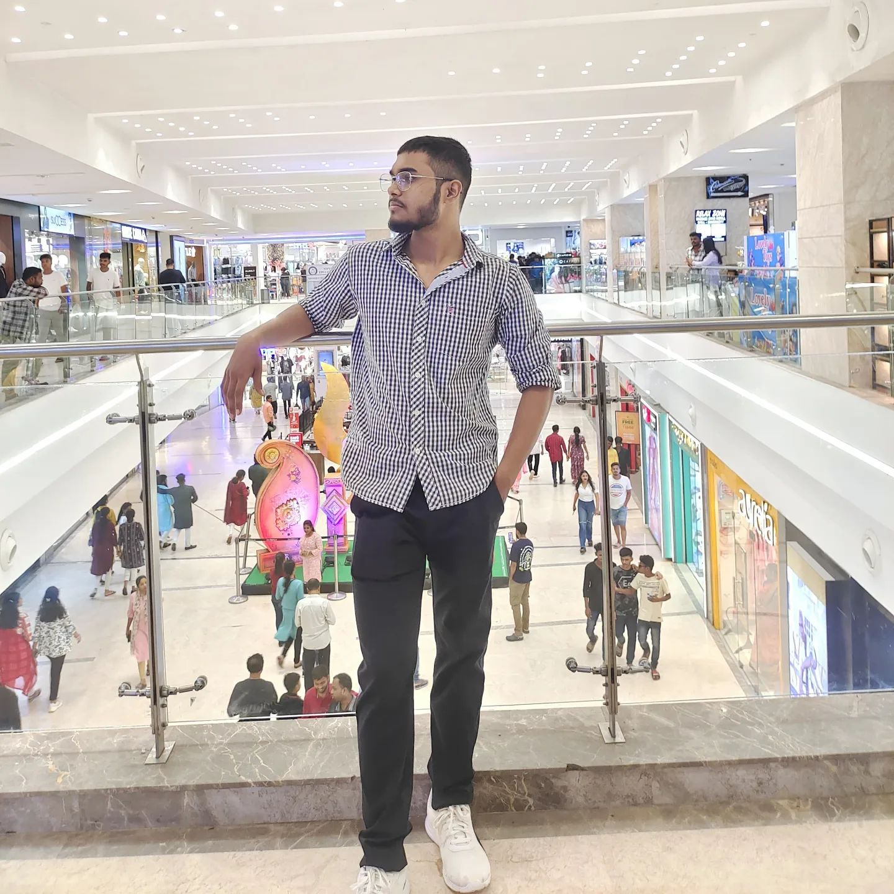

|  |
Enthusiastic beginner in web development with a focus on HTML, CSS, and responsive design. Eager to learn more about front-end technologies and build user-friendly websites.
Description: Created a static webpage using HTML and CSS that adjusts well on both desktop and mobile.
Description: A responsive portfolio website showcasing my projects, built with HTML and CSS.
High school(10th) and Secondary education(12th) in computer science
kendriya vidyalaya no-2 bhubaneswar
Self-Taught Web Developer | Completed online tutorials and courses on HTML and CSS basics.